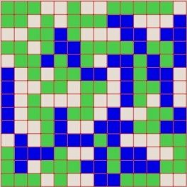

Copyright (c) 2009-. Faustino Frechilla
Last modified: 21st April 2010

Blockem |
|||||||||||||||||||||||||||||||||||||||||||||||
|
 Download blockem at sourceforge ...Or have a look at the screenshots |
What is blockem?Blockem is an open source clone of the board strategy game blokus in its duo version. It is available for Unix-like systems and Windows and it is written in C++/GTKmm (the C++ wrapper of GTK+) Blockem is the result of "a bit of" a obsession I have since I first discovered blokus back in 2008. Back in those days an idea crossed over our (my and my workmates') heads, creating a smart blokus player to be used in one of the several 3 blokus games we used to play whenever the 4th player was missing. Later on, once the project was started, we realised a smart blokus player in a 4 player game is, firstly, much more complicated to develop, and secondly, much harder to proof to be smart, due to the nature of the 4-players blokus game. If you ever played a blokus game I am sure you have noticed 4-players blokus is not a fully strategical game but more of a psychological one, since you can get ganged up by the other 3 players, isn't it James? Rules:Basically you've got 21 pieces to put down on the board (which are a set of all the possible free polyominoes from 1 to 5 squares), while preventing your opponent from doing the same. There are 3 basic rules to put down pieces on the board:
Download:This is a list of all the different releases of blockem made so far. Latest is 0.1.5, which was released on the 16th of April 2010. You might also want to browse to sourceforge to have a look at all the available files, or to the sources in the svn repository
Artificial Intelligence:Artificial intelligence is the main reason why this project was started in the first place. The aim at the very beginning was creating a smart blokus player to be used in one of the several 3-player blokus games we used to play whenever a player was missing. Later on, once the project was started, we realised a smart blokus player in a 4 player game is, firstly, much more complicated to develop, and secondly, much harder to proof to be smart, due to the nature of the 4-players blokus game. If you ever played a blokus game I am sure you have noticed 4-players blokus is not a fully strategical game but more of a psychological one, since you can get ganged up by the other 3 players. However, blokus duo is pure strategical, you are responsible for your moves and you have to play against only one opponent. This is the main reason why the project changed at the early stages to be a blokus clone for the 1vs1 game (duo). Of course, this doesn't mean I don't want the project to be extended to cover the 4-player game too (in fact, I would love it, since, I already said, it was the reason why this whole thing was started in the first place) For whoever is interested in this part of blockem, I have written a document explaining the main parts of the AI, and how you can extend it if you are interested. It is contained in the source package in the doc/ directory, or in HTML format here. Happy reading! HOWTO compile blockem sources:Blockem sources have been compiled in both Linux and Windows, however it should compile in every platform where GTKmm has been ported. There is an official bunch of GTKmm installers for lots of Linux flavours and other operative systems here Linux:Compiling blockem in a linux environment is "almost" straight away, you'll need to have the g++ compiler and the gtkmm-2.4 and glademm-2.4 libraries for developers. The process to install these libraries differs depending on the type of linux you are using:
Once your system has those requirements covered, it is ready to compile and install the package:
Windows:There is a ready-to-run precompiled binary in the release list. If you still want to compile the sources in this platform have a look at this HOWTO I wrote when I compiled it for the 1st time. MacOS X:There is a Fink package to install gtkmm on MacOS X. Once it is installed blockem should compile easily (though it hasn't been tested) |
|
Copyright (c) 2009-. Faustino Frechilla |
|